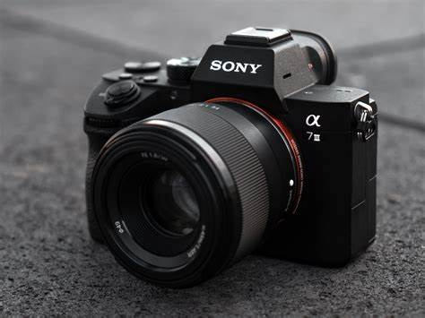

Photographie numérique

La photographie numérique permet de prendre des images grâce à un capteur électronique, au lieu de la pellicule dans les anciens appareils.
1. Fonctionnement
Un capteur capte la lumière et la transforme en pixels
L’image est enregistrée sous forme de fichier (JPEG, PNG...)
2. Résolution
Elle se mesure en pixels (ex : 1920×1080). Plus il y a de pixels, plus l’image est précise.
3. Stockage
Les photos sont enregistrées sur une carte mémoire
On peut les transférer sur un ordinateur ou dans le cloud
4. Retouches possibles
Recadrer
Modifier les couleurs
Ajouter des filtres
← Retour à l'accueil